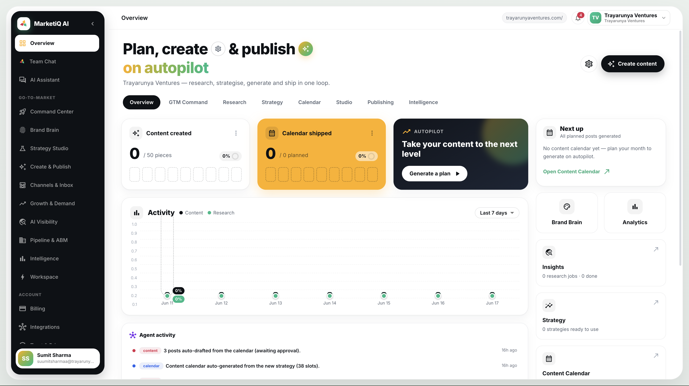

MarketiQ AI is an Autonomous Go-To-Market Operating System powered by 46 AI agents and 31 autonomous optimization loops that continuously research, strategize, create, publish, optimize and learn across your entire go-to-market.

Every stage feeds the next, and real performance data feeds back to the start — so each cycle is sharper than the last.
Autonomous agents crawl your site and the live web, map real demand, size the market and read every competitor — so your GTM starts from evidence, not opinions.
An AI strategist turns evidence into positioning, ICP & segments, a full funnel, lead magnets and a date-aware calendar — tuned for B2B or B2C/D2C.
On-brand posts, carousels, threads, blogs, lead magnets and decks — written in your voice and colours, QA-gated before anything ships.
Schedule and push to LinkedIn, X, Instagram, Facebook & YouTube via native OAuth. Agentic ads create and optimise campaigns.
Every decision is measured and attributed to real outcomes. Winning plays become a learned policy that flows into every agent — it gets smarter each cycle.
Teams duct-tape a dozen disconnected tools and still do the work by hand. MarketiQ replaces the stack with one autonomous engine.
A 46-agent team that actually runs your go-to-market — each agent perceives live signals, calls 100+ real tools, and acts.
Every specialist sees a live snapshot of your channels and wields 100+ workspace-scoped tools — never blind.
Research → strategy → content → campaigns → revenue, connected through one Revenue Graph.
Every decision is attributed to real outcomes. Winning plays become a learned policy — including a win-probability model.
Every number carries its source, timestamp and confidence. Honest gaps are reported, never back-filled.
Earned, risk-tiered autonomy under a kill-switch. Real spend & publishing only fire for proven agents.
Each module shares the same research, brand and data layer — so insight in one place sharpens every other.
Simple monthly credits that reset every month. Start free, upgrade as your GTM engine earns it.
Or start free — no card needed · Enterprise from $5,000/mo
An Autonomous Go-To-Market Operating System. It runs one closed loop — research, GTM strategy, creation, publishing and learning — across 30+ connected modules. One engine powers both Enterprise (B2B) and Consumer (B2C/D2C) motions.
Single tools give you a chat box. MarketiQ gives you a 46-agent team under an AI CMO — each agent perceives your live channel signals and calls 100+ real tools to research, decide and act, all sharing one data layer.
Yes — MarketiQ detects your motion and tunes everything to it: account-based orchestration and revenue attribution for B2B; demand-at-scale, performance ads and trend-aware calendars for B2C/D2C.
LinkedIn, X, Instagram, Facebook and YouTube via native OAuth — you stay in full control of your own apps and tokens, with per-channel captions scheduled from one calendar.
No. MarketiQ runs on our own managed, enterprise-grade AI — no setup or keys required. You just point it at your website and connect the channels you want.
Absolutely — it's multi-tenant by design. The Agency plan gives 5 workspaces (one per client), unlimited members, white-label portals and API access. Enterprise starts at $5,000/mo.
Spin up a workspace, point it at your website, and watch a real go-to-market strategy appear in minutes — for B2B or B2C.